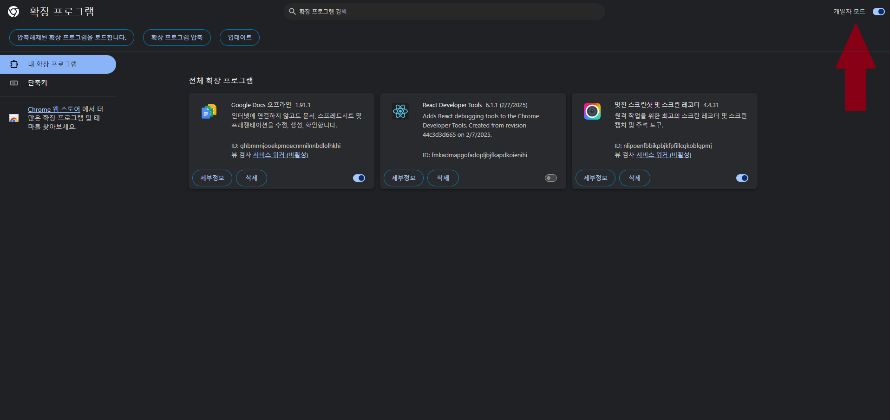
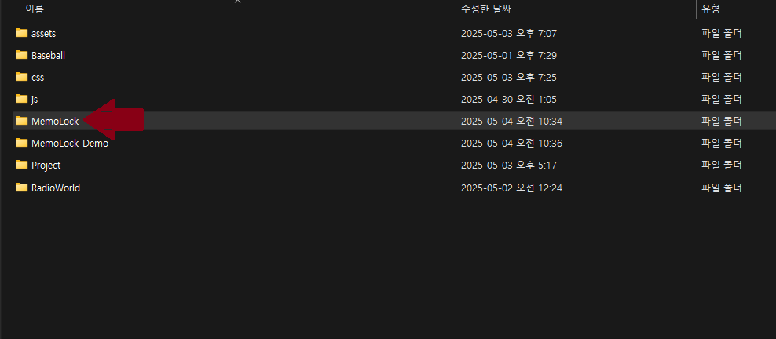
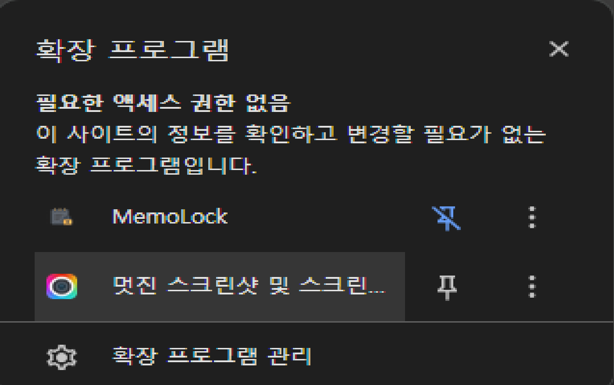

소개
MemoLock은 Chrome 브라우저의 사이드패널에서 작동하는 메모장 확장 프로그램입니다. 비밀번호 보호 기능을 통해 개인 정보를 안전하게 보관할 수 있으며, 사용자 친화적인 인터페이스로 메모를 쉽게 관리할 수 있습니다.
비밀번호 보호
모든 메모는 비밀번호로 안전하게 보호됩니다
간편한 메모 관리
추가, 수정, 삭제가 쉽고 직관적입니다
로컬 저장
모든 데이터는 브라우저에 안전하게 저장됩니다
메모 상세 보기
클릭 한 번으로 메모 전체 내용을 확인할 수 있습니다
설치 방법
-
확장 프로그램 다운로드
아래 다운로드 버튼을 클릭하여 MemoLock.zip 파일을 다운로드합니다.
-
압축 해제
다운로드한 ZIP 파일의 압축을 적절한 위치에 해제합니다.
-
크롬 확장 프로그램 페이지 접속
Chrome 브라우저에서
chrome://extensions/로 이동합니다. -
개발자 모드 활성화
우측 상단의 "개발자 모드" 토글을 활성화합니다.
개발자 모드 토글을 ON으로 설정하세요
-
확장 프로그램 로드
"압축해제된 확장 프로그램을 로드합니다" 버튼을 클릭하고, 압축 해제한 MemoLock 폴더를 선택합니다.
압축해제된 확장 프로그램 로드 버튼을 클릭하세요
-
확장 프로그램 고정
Chrome 툴바에서 확장 프로그램 아이콘을 클릭하고 MemoLock을 고정합니다.
MemoLock 아이콘을 툴바에 고정하세요
사용 방법
1. 비밀번호 설정 및 로그인
처음 실행 시 비밀번호를 설정하고, 이후에는 해당 비밀번호로 메모를 잠금 해제합니다.
처음 사용 시 비밀번호를 설정하고, 이후에는 비밀번호로 로그인합니다
2. 메모 추가하기
제목과 내용을 입력하고 '메모 추가' 버튼을 클릭하면 새 메모가 생성됩니다.
제목과 내용을 입력하고 '메모 추가' 버튼을 클릭하세요
3. 메모 상세 보기
메모 카드를 클릭하면 상세 내용을 볼 수 있는 모달 창이 열립니다.
메모 카드를 클릭하면 전체 내용을 확인할 수 있습니다
4. 메모 수정하기
메모 카드의 '수정' 버튼을 클릭하면 메모를 수정할 수 있습니다.
수정 버튼을 클릭한 후 내용을 변경하고 '메모 수정' 버튼을 클릭하세요
5. 메모 삭제하기
메모 카드의 '삭제' 버튼을 클릭하면 애니메이션과 함께 메모가 삭제됩니다.
삭제 버튼을 클릭하면 애니메이션과 함께 메모가 삭제됩니다
6. 잠금 기능
작업을 마친 후 '잠금' 버튼을 클릭하면 메모가 잠깁니다.
잠금 버튼을 클릭하면 메모가 비밀번호로 보호됩니다
다운로드
아래 버튼을 클릭하여 MemoLock 확장 프로그램을 다운로드하세요.
MemoLock 다운로드기술 정보
사용 기술
- HTML, CSS, JavaScript
- Chrome Extension API (Manifest V3)
- SidePanel API
- LocalStorage
주요 특징
- 모던 UI/UX 디자인
- 애니메이션 효과
- 반응형 레이아웃
- 다크 테마